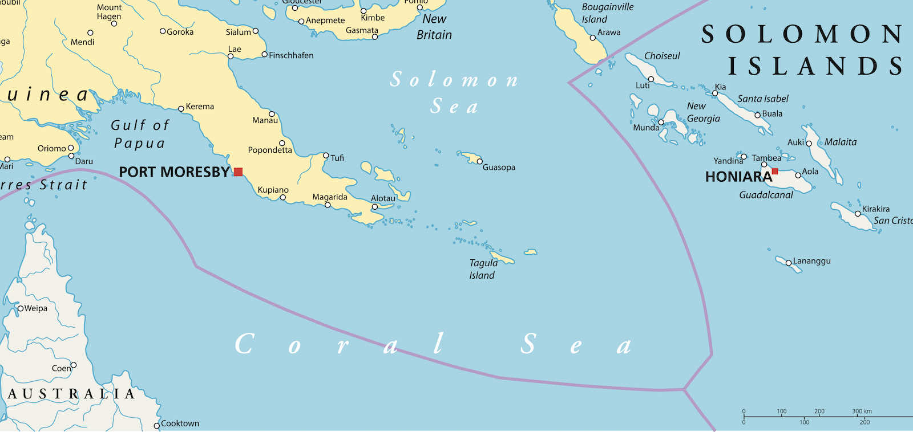

Frustrating Beijing’s ambitions to create a sphere of influence is overwhelmingly a diplomatic task, not a military one. (Cross posted from The Interpreter at the Lowy Institute)

There was barely concealed panic in Australia when news broke that China had struck a security agreement with Solomon Islands. What if this is really a basing deal that allows China to station military aircraft or warships permanently? Solomons Prime Minister Manasseh Sogavare’s emphatic denial on this point seemed to make little difference.With the mere suggestion of a Chinese base, Australia is getting a foretaste of what South Korea, Japan and Taiwan live with every day – a great power on their doorstep which likes to throw its military weight around. The Taiwanese air force deals constantly with PLA bombers, fighters and spy planes approaching its air space. Japan’s Defense Ministry regularly announces news of PLA Navy fleets transiting its nearby waters. It might be Australia’s turn next.
It is clearly in Australia’s interests to prevent China ever establishing bases in the Pacific Islands region. Distance is the country’s single biggest defence asset. Australia is hard to attack because it is far away from potential adversaries. Anything which reduces that distance – and a Pacific base could bring Chinese military power to within 2000 kilometres of Australia’s east coast – is bad news.
But let’s assume for the moment that it is beyond Australia to stop China’s ambitions. This would be a setback, but Japan, South Korea and Taiwan have found ways to cope with heightened Chinese military activity on their borders. In fact, Australia’s situation would remain more favourable than theirs because when Taiwan’s air force, for instance, intercepts a Chinese bomber approaching its air space, Taiwan knows there are hundreds more where that came from.
For Australia, the task would be more contained because such a base would likely host no more than two-dozen planes. And Australia would know such a fleet could not be replenished in the event of a war because the base would be relatively easy for its navy and air force to isolate. Australia doesn’t even need a fleet of nuclear-powered submarines for this task. Smaller diesel boats and lots of naval minelaying capability would do the job, at much lower cost.
Could a Chinese base in the Solomons or elsewhere in the Pacific threaten Australia’s maritime trade routes? Yes, but those trade routes stretch thousands of kilometres throughout the region anyway, and they are impossible to protect. China doesn’t need a base in the Pacific to threaten them. Would a Pacific base bring China dangerously close to the submarine cables that link Australia electronically to the world? Maybe, but those tendrils stretch across the region, too. Physically protecting them from compromise everywhere and all the time is also impossible.
You would assume China knows all this, so the question arises: why would China want a military base in the Pacific?
The first plausible reason has nothing much to do with Australia and everything to do with America. China is determined to assume unquestioned and unassailable strategic leadership in Asia, and to do that, it needs to push the United States out. China would much prefer to do this by coercion and persuasion than by fighting America, and one way to push the United States out peacefully is to convince the region that American power is waning, and China is the future. How to do that? By taking dramatic steps to extend its power to new parts of the world and demonstrating that it cannot be resisted. In other words, China would acquire a base in the Pacific to show that the US is powerless to stop it. The implicit message to the region would be that America can no longer be relied upon to exercise leadership.
But a base in the Pacific would not only help push the United States out of Asia, it would also be a useful asset in a post-American Asia. This brings us to the second reason for such a facility.
Like all great powers before it, China is determined to establish a sphere of influence, a geographical area over which it exercises unquestioned authority and in which other great powers do not interfere. The United States has a sphere of influence in the Americas, and Putin’s Russia is now making a disastrous attempt to re-establish one in Ukraine.
It would be impossible for China to establish a sphere of influence in the Asia Pacific without foreign bases because it is otherwise prohibitively expensive and difficult to project military power over the region’s vast distances. America’s navy is a powerful symbol of its global reach, but if US Navy ships could not be replenished and refuelled at a string of foreign facilities, America would not be the global military power it is today. The same logic would apply to China.
It is very much an open question whether China’s sphere of influence could ever stretch as far as the Pacific Islands. It certainly looks a long way off. Right now, China has only one foreign base in the entire world, in Djibouti. The task of building a network of bases throughout the Asia Pacific is massive.
A Chinese sphere of influence stretching as far as the Pacific, policed by a network of bases, would be a truly momentous change to Australia’s security environment, which Canberra ought to do everything in its power to delay or stop. What the defence hawks, including inside the government, fail to appreciate is that this is overwhelmingly a diplomatic task, not a military one.
Which raises a third plausible explanation for China’s behaviour, one which has everything to do with Australia but little to do with defence. It is that Beijing’s security agreement with the Solomons is designed to embarrass Australia before its great ally, and to demonstrate the limits of Australia’s diplomatic influence. On that level the agreement has already worked, even before China builds a base.